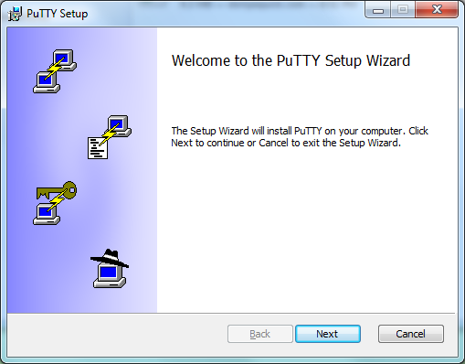
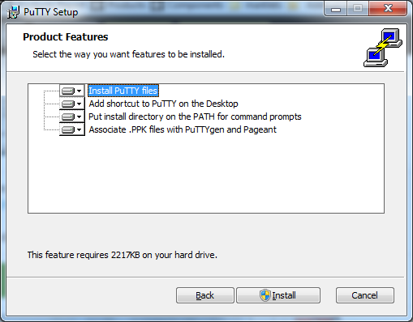

2. Laptop Setup
Objectives
In this lab you will configure your laptop for the workshop. By the end of the module you will:
- Have a local directory or folder to hold all the files required for your dispenser
- Have installed and tested a device driver to communicate with the microcontroller
- Downloaded a command line utility to program (flashed) the microcontroller
- Have an open terminal or command prompt ready to issue commands, and verified that the microcontroller appears as a serial device
The microcontroller is programmed, or flashed, via a USB serial connection from a computer or laptop. Based on the microcontroller chipset, a specific driver is required.
Each persons laptop is unique and the general instructions may not work for a variety of reasons such as having a older version of the driver loaded, insufficient permissions to install, or older versions of Operating Systems. Please ensure that the checkpoint at the end has been completed prior to starting the next lab. If you run into problems, please ask fro assistance from a workshop assistant.
Steps to Complete
Follow each step in order and use the Click to open for detailed step-by-step instructions if required.
1. Create Local Folder
Create a local folder called cdd that will contain all downloads and assets needed for the workshop. It is recommended to create this within your web browsers default download location. When asked to download resource X to cdd folder, save or move the files to that folder.
Click to open for detailed step-by-step instructions
- Open a file browser for your operating system (Windows: Explorer, macOS: Finder) and navigate to the default download folder used by your web browser.
- Create a folder named
cdd within Downloads and note the location
- Leave a file browser open as we will be using it to move files around in later modules.
2. Download and Install Serial Driver
The microcontroller used in this workshop, the ESP32-DevKitC, has a built-in Silicon Labs CP210x serial controller. In order for you laptop to communicate with the microcontroller you need to download and install the CP210x USB to UART Bridge VCP Drivers for your operating system. Follow the instructions exactly, you may be required to provide permissions to the driver and in some cases restart you laptop to complete the installation process.
Use the installer specific to the exact version of your operating system. Using the wrong driver will not work and may make it difficult to install the proper version later.
Click to open for detailed step-by-step instructions
- Open a browser window to the the CP210x USB to UART Bridge VCP Drivers download page.
- Download the software (the Download VCP link) for your operating system. If in doubt, please verify the version and read the release notes to confirm.
- Once downloaded, follow the instructions to complete the installation of the driver.
Here are some tips for popular operating systems:
- Windows 10 - Unzip and use the installer for either 32-bit or 64-bit. The VCP driver may have been installed by Windows Update, but using the Silicon Labs provided driver will work with the ESP32-DevKitC.
- Windows 7/8/8.1 - Use the default driver, not the serial emulation one. The VCP driver may have been installed by Windows Update, but using the Silicon Labs provided driver will work with the ESP32-DevKitC. If the default driver does not work, you may try the other driver.
- macOS/OSX - Mount the DMG file, or use the legacy folder for OSX 10.9 or 101.10. NOTE: On MacOS 10.13 and later, the installation of the driver may be blocked. To unblock, open the System Preferences Security & Privacy pane and unblock the system extension. See Apple Technical Note TN2459 “User-Approved Kernel Extension Loading” for more information.
To be able to flash the firmware to the microcontroller we need to install a specific application called esptool. A pre-built executable can be downloaded here for macOS and here for Windows. Unzip or untar the file and place the file in the cdd directory.
For Linux users, or if you prefer to have it installed as a Python package, follow the instructions for your operating system to install the application. If installed correctly the command should accessible from any directory.
Click to open for detailed step-by-step instructions
Option 1 - Executable for macOS and Windows
- Save the macOS or Windows compressed esptool file to your browsers Downloads directory.
- Unzip or untar and move the esptool file (
esptool for macOS, esptool.exe for Windows) from the esptool folder to the cdd folder.
- This will allow you to run esptool without having to add it to your PATH.
Option 2 - Install as Python Module
- Navigate to the esptool.py GitHub repository and scroll down to the installation instructions section.
- For your operating system, follow the instructions to install the Python modules. It is recommended to install in a virtual environment or in such a way so that is doesn’t affect your operating system’s Python installation.
Optional Installations
If you are unable to install the esptool or run it via the options above, there are optional versions available for different operating systems. Please note that these have not been tested, and there may be differences between the arguments referenced in the lab modules and the actual software.
- macOS - If you have brew installed, you can install esptool via
brew install esptool.
- Ubuntu - Recent versions of Ubuntu have esptool as an installable package:
sudo apt-get install -y esptool. Other mainline Linux distributions may also have similar packages for installation.
- All Operating Systems - esptool-ck has compiled versions, please check the releases section.
4. Open Command Line Interface and Test All Components
Before testing, remove the ESP32 microcontroller (labeled as Provided ESP32) and USB cable from the zip-top bag:

Ensure that you have installed both the esptool and the USB to serial device driver before continuing
To interact with the microcontroller you will use a terminal window (macOS and Linux) or a command prompt (Windows). Create a terminal window and change to the cdd directory you created. Verify that you can run the esptool command, and then verify that when you connect the ESP32 via the USB cable that a new serial device is created.
When you have verified the previous step, remove the USB cable from the laptop and microcontroller.
Click to open for detailed step-by-step instructions
- For macOS or Linux, launch a terminal window, for Windows launch a command prompt.
- Windows - Launch a cmd.exe (Command Prompt).
- macOS - +
Space -> terminal.app
- Linux -
Control + Alt + T
From the terminal window, run esptool and make sure it responds (the result doesn’t matter, just that the executable can be run):
$ esptool.py -h
usage: esptool [-h] [--chip {auto,esp8266,esp32}] [--port PORT] [--baud BAUD]
...
$
For Windows the command would be esptool.exe, and depending if you installed or just downloaded the file, for macOS/Linux ./esptool.py, ./esptool or just esptool may be the syntax needed. Note what syntax worked, as you will need to use that for when you get to flashing the microcontroller.
For macOS and Linux, you will use the built-in screen utility to connect to and monitor the microcontroller. There is no configuration required.
Click to open for detailed step-by-step instructions for macOS and Linux
- Check what serial ports are in use before connecting the ESP32.
ls -l /dev/tty.* will show the ports. You should not see a tty.SLAB_USBtoUART entry yet.- For Linux,
ls -l /dev/tty.* and note the port numbers.
Connect the ESP32, then run the same commands and look for a new entries: that will be the port you will use when flashing and monitoring the microcontroller.
When added to a MacBook Pro, a valid driver installation and good data+power USB connection would show this:
$ # Before connecting ESP32 to laptop
$ ls /dev/tty.*
/dev/tty.Bluetooth-Incoming-Port
$ # After connecting as above
/dev/tty.Bluetooth-Incoming-Port /dev/tty.SLAB_USBtoUART
Run the following command and observe if output is showed in the terminal
$ screen /dev/tty.SLAB_USBtoUART 115200
<a bunch of line should be printed>
To exit press press CTRL+a CTRL-\ and confirm with y
Remove the USB cable from both the microcontroller and your laptop.
In macOS or Linux you might not get any error, but flashing the firmware will not work if you have an ongoing screen session. Check it by running screen -ls at the command prompt and kill any existing session before trying to flash the firmware again.
For Windows, you can either use a serial application already installed or download and use PuTTY.
Click to open for detailed step-by-step instructions for Windows Install of PuTTY
- Download Putty from here or here.
Run the installation wizard and select all options:


Select Session in the left panel, and Serial in the radio boxes list in the right panel. Do not use the Serial entry in the left panel
Configure the Serial line using COMx port from above, and enter 115200 in the Speed field
Create the session by clicking on Open
Open the Console to see the microcontroller output.

Remove the USB cable from both the microcontroller and your laptop.
Only one application at a time can access a serial port. When working with esptool, you will have to close the PuTTY console before flashing the firmware. If you get an error about port in use or unavailable, this is most likely the reason. Close the Putty Console and try again.
In macOS you might not get any error, but flashing the firmware will not work if you have an ongoing screen session. Check it by running screen -ls at the command prompt and kill any existing session before trying to flash the firmware again.
Checkpoints
Please ensure the following checkpoints are validated before moving on to the next module.
- Folder
cdd - Verify and note the location of the folder
- Serial driver installed and tested - When the ESP32 is connected, the driver is working if a new serial port is created (
/dev/tty.SLAB_USBtoUART or similar for macOS, a COMx port for Windows)
- Serial Monitoring Tool - Either PuTTY for Windows or
screen for macOS/Linux. When you see monitoring mentioned, this is the tool to use.
- Flash Tool - This is the
esptool or esptool.py that you will use to flash the microcontroller
- Command line window left open for other lab modules
Outcomes
Installation of device drivers, tool chains, and utilities such as esptool to interact with microcontrollers is complex, so why do we do it? Unlike cloud environments that can be stood up with infrastructure as code (IaaC), firmware development and testing takes place locally.
By completing and testing the installation of the tools in advance, we know that our environment is working properly. And if we need to fix or have another laptop or desktop to develop from, the steps to complete the setup are documented.